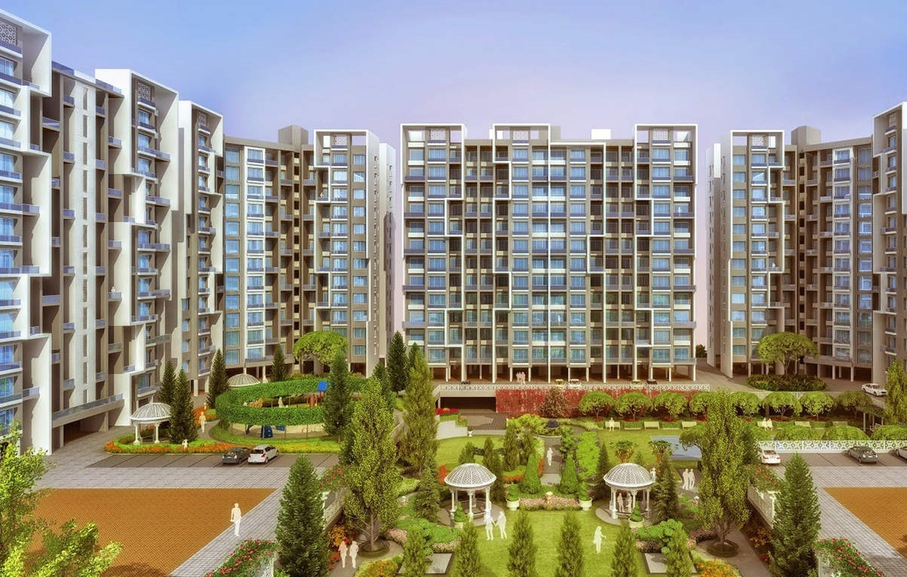
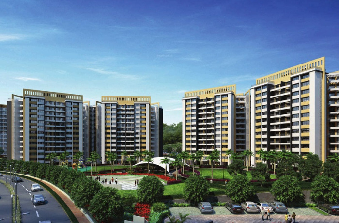

ONGOING PROJECTS
 
The appeal of Kerala is inseparable from its rare charm and its heritage. Purva Eternity recreates this ageless eloquence within its fabulously constructed homes. By employing techniques and materials that are characteristic of Kerala, Purva Eternity transports the soul of Kerala into its own homes. Let your mind float along the backwaters as you sense the spirit behind the vintage-styled landscape, the tradition-inspired swimming pool and the statues of nymphs and gods. Come revel in the joy of living in divine territory that we call Purva Eternity. The Flats, Apartments, Houses for Sale Is just 2 km from Kakkanad Collectorate Junction, 2 km from Info ParkLocation: At Kakkanad.